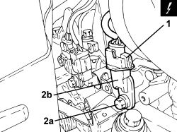

1056F56 RIGHT CYLINDER HEAD INTAKE OR EXHAUST CAM ANGLE SENSOR - R.R.
- Path
- Procedures > 10 ENGINE > 1056 PETROL INJECTION SYSTEM > 1056F PETROL DIRECT INJECTION SYSTEM > 1056F56 RIGHT CYLINDER HEAD INTAKE OR EXHAUST CAM ANGLE SENSOR - R.R.
- Kind
- repair procedure (removal / refitting; the operation number is the code)
- Applies to
- engines: 3.2 JTS; all production periods
- Interactive page
- https://sloeber94.github.io/elrnDB-aBrrSpdr/en/#/946001918
Applies to: engines: 3.2 JTS; all production periods
 Removing
Removing
 Refitting
RefittingOp. 1048A63 HOSE CONNECTING RESONATOR, FLOW METER AND THROTTLE BODY - R.R.
1. Disconnect the electrical connection for the cam angle sensor, inlet side.
Description | Connector | |
|---|---|---|
1 | Inlet side timing sensor - right head |
2. Undo the bolt (2a) and remove the cam angle sensor (2b), inlet side.

Applies to: engines: 3.2 JTS; all production periods
Refitting
Removing- Lubricate the cam angle sensor O-ring with engine oil.
- Position the cam angle sensor, inlet side in its housing and secure it using the bolt.
- Connect the electrical connection for the cam angle sensor, inlet side.
Op. 1048A63 HOSE CONNECTING RESONATOR, FLOW METER AND THROTTLE BODY - R.R.
Topics linked from this page (2)
- 1048A63 HOSE CONNECTING RESONATOR, FLOW METER AND THROTTLE BODY - R.R.
- K191 RIGHT HEAD INLET SIDE TIMING SENSOR